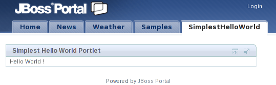

The Java Community Process (JCP) uses Java Specification Requests (JSRs) to define proposed specifications and technologies designed for the Java platform.
The Portlet Specifications aim at defining portlets that can be used by any JSR-168 (Portlet 1.0) or JSR-286 (Portlet 2.0) portlet container.
Most Java EE (Enterprise Edition) portals include at least one compliant portlet container, and GateIn 3.2 is no exception. In fact, GateIn 3.2 includes a container that supports both versions.
This chapter gives a brief overview of the Portlet Specifications, but portlet developers are strongly encouraged to read the JSR-286 Portlet Specification .
GateIn 3.2 is fully JSR-286 compliant. Any JSR-168 or JSR-286 portlet operates as it is mandated by the respective specifications inside the portal.
A portal can be considered as a series of web pages with different areas within them. Those areas contain different windows and each window contains portlet:
The diagram below visually represents this nesting:

A portlet can have different view modes. Three modes are defined by the JSR-286 specification:
- View
Generate the markup reflecting the current state of the portlet.
- Edit
Allow you to customize the behavior of the portlet.
- Help
Provide information to the user as to how to use the portlet.
Window states are an indicator of how much page space a portlet consumes on any given page. The three states defined by the JSR-168 specification are:
- Normal
A portlet shares this page with other portlets.
- Minimized
A portlet may show very little information, or none at all.
- Maximized
A portlet may be the only portlet displayed on this page.
The tutorials contained in this chapter are targeted towards portlet developers. It is also recommended that developers read and understand the JSR-286 Portlet Specification .
Maven
This example is using Maven to compile and build the web archive. Maven versions can be downloaded from maven.apache.org
This section describes how to deploy a portlet in GateIn 3.2. A sample portlet called SimplestHelloWorld is located in the examples directory at the root of your GateIn 3.2 binary package. This sample is used in the following examples.
To compile and package the application:
Navigate to the SimplestHelloWorld directory and execute:
mvn package
If the compile is successfully packaged, the result will be available in: SimplestHelloWorld/target/SimplestHelloWorld-0.0.1.war .
Copy the package file into JBOSS_HOME/server/default/deploy.
Start the JBoss Application Server (if it is not already running).
Create a new portal page and add the portlet to it.

Like other Java EE applications, GateIn 3.2 portlets are packaged in the .war files. A typical portlet .war file can include servlets, resource bundles, images, HTML, JavaServer Pages (JSP), and other static or dynamic files.
The following is an example of the directory structure of the SimplestHelloWorld portlet:
|-- SimplestHelloWorld-0.0.1.war
| `-- WEB-INF
| |-- classes
| | `-- org
| | `-- gatein
| | `-- portal
| | `-- examples
| | `-- portlets
| |  `-- SimplestHelloWorldPortlet.class
| |-- portlet.xml
| `-- web.xml
`-- SimplestHelloWorldPortlet.class
| |-- portlet.xml
| `-- web.xml
| The compiled Java class implementing javax.portlet.Portlet (through javax.portlet.GenericPortlet ) |
This is the mandatory descriptor files for portlets. It is used during deployment. | |
This is the mandatory descriptor for web applications. |
Below is the SimplestHelloWorldPortlet/src/main/java/org/gatein/portal/examples/portlets/SimplestHelloWorldPortlet.java Java source:
package org.gatein.portal.examples.portlets; import java.io.IOException; import java.io.PrintWriter; import javax.portlet.GenericPortlet; import javax.portlet.RenderRequest; import javax.portlet.RenderResponse; public class Srite("Hello World !"); writer.c
lose(); } }
| All portlets must implement the javax.portlet.Portlet interface. The portlet API provides a convenient implementation of this interface. The javax.portlet.Portlet interface uses the javax.portlet.GenericPortlet class which implements the Portlet render method to dispatch to abstract mode-specific methods. This makes it easier to support the standard portlet modes. Portlet render also provides a default implementation for the processAction, init and destroy methods. It is recommended to extend GenericPortlet for most cases. |
If only the view mode is required, only the doView method needs to be implemented. The GenericPortletrender implementation calls our implementation when the view mode is requested. | |
Use the RenderResponse to obtain a writer to be used to produce content. | |
| Write the markup to display. |
| Close the writer. |
Markup Fragments
Portlets are responsible for generating markup fragments, as they are included on a page and are surrounded by other portlets. This means that a portlet outputing HTML must not output any markup that cannot be found in a <body> element.
GateIn 3.2 requires certain descriptors to be included in a portlet WAR file. These descriptors are defined by the Jave EE (web.xml) and Portlet Specification (portlet.xml).
Below is an example of the SimplestHelloWorldPortlet/WEB-INF/portlet.xml file. This file must adhere to its definition in the JSR-286 Portlet Specification. More than one portlet application may be defined in this file:
<portlet-app xmlns="http://java.sun.com/xml/ns/portlet/portlet-app_2_0.xsd"
xmlns:xsi="http://www.w3.org/2001/XMLSchema-instance"
xsi:schemaLocation="http://java.sun.com/xml/ns/portlet/portlet-app_2_0.xsd
http://java.sun.com/xml/ns/portlet/portlet-app_2_0.xsd"
version="2.0">
<portlet>
<portlet-name>SimplestHelloWorldPortlet</portlet-name>
<portlet-class>
org.gatein.portal.examples.portlets.SimplestHelloWorldPortlet
</portlet-class>
<supports>
<mime-type>text/html</mime-type>
</supports>
<portlet-info>
<title>Simplest Hello World Portlet</title>
</portlet-info>
</portlet>
</portlet-app>
| Define the portlet name. It does not have to be the class name. |
The Fully Qualified Name (FQN) of your portlet class must be declared here. | |
The <supports> element declares all of the markup types that a portlet supports in the render method. This is accomplished via the <mime-type> element, which is required for every portlet. The declared MIME types must match the capability of the portlet. It allows administrators to pair which modes and window states are supported for each markup type. This does not have to be declared as all portlets must support the view portlet mode. Use the <mime-type> element to define which markup type the portlet supports. In the example above, this is text/html. This section tells the portal to only output HTML. | |
| When rendered, the portlet's title is displayed as the header in the portlet window, unless it is overridden programmatically. In the example above, the title would be Simplest Hello World Portlet . |
This section discusses:
Add more features to the previous example.
Use a JSP page to render the markup.
Use the portlet tag library to generate links to the portlet in different ways.
Use the other standard portlet modes.
The example used in this section can be found in the JSPHelloUser directory.
Execute
mvn packagein this directory.Copy JSPHelloUser/target/JSPHelloUser-0.0.1.war to the deploy directory of JBoss Application Server.
Select the new JSPHelloUser tab in your portal.

Note
The EDIT button only appears with logged-in users, which is not the case in the screenshot.
The package structure in this tutorial does not much differ from the previous example, with the exception of adding some JSP files detailed later.
The JSPHelloUser portlet contains the mandatory portlet application descriptors. The following is an example of the directory structure of the JSPHelloUser portlet:
JSPHelloUser-0.0.1.war
|-- META-INF
| |-- MANIFEST.MF
|-- WEB-INF
| |-- classes
| | `-- org
| | `-- gatein
| | `-- portal
| | `-- examples
| | `-- portlets
| | `-- JSPHelloUserPortlet.class
| |-- portlet.xml
| `-- web.xml
`-- jsp
|-- edit.jsp
|-- hello.jsp
|-- help.jsp
`-- welcome.jsp
The code below is from the JSPHelloUser/src/main/java/org/gatein/portal/examples/portlets/JSPHelloUserPortlet.java Java source. It is split in different pieces.
package org.gatein.portal.examples.portlets;
import java.io.IOException;
import javax.portlet.ActionRequest;
import javax.portlet.ActionResponse;
import javax.portlet.GenericPortlet;
import javax.portlet.PortletException;
import javax.portlet.PortletRequestDispatcher;
import javax.portlet.RenderRequest;
import javax.portlet.RenderResponse;
import javax.portlet.UnavailableException;
public class JSPHelloUserPortlet extends GenericPortlet
{
public void doView(RenderRequest request, RenderResponse response)
throws PortletException, IOException
{
String sYourName = (String) request.getParameter("yourname");
if (sYourName != null)
{
request.setAttribute("yourname", sYourName);
PortletRequestDispatcher prd =
getPortletContext().getRequestDispatcher("/jsp/hello.jsp");
prd.include(request, response);
}
else
{
PortletRequestDispatcher prd = getPortletContext().getRequestDispatcher("/jsp/welcome.jsp");
prd.include(request, response);
}
}
...
| Override the doView method (as in the first tutorial). |
This entry attempts to obtain the value of the render parameter named yourname. If defined, it should redirect to the hello.jsp JSP page or to the welcome.jsp JSP page. | |
Get a request dispatcher on a file located within the web archive. | |
| Perform the inclusion of the markup obtained from the JSP. |
Like the VIEW portlet mode, the specification defines two other modes; EDIT and HELP.
These modes need to be defined in the portlet.xml descriptor. This enables the corresponding buttons on the portlet's window.
The generic portlet that is inherited dispatches different views to the methods: doView , doHelp and doEdit.
...
protected void doHelp(RenderRequest rRequest, RenderResponse rResponse) throws PortletException, IOException,
UnavailableException
{
rResponse.setContentType("text/html");
PortletRequestDispatcher prd = getPortletContext().getRequestDispatcher("/jsp/help.jsp");
prd.include(rRequest, rResponse);
}
protected void doEdit(RenderRequest rRequest, RenderResponse rResponse) throws PortletException, IOException,
UnavailableException
{
rResponse.setContentType("text/html");
PortletRequestDispatcher prd = getPortletContext().getRequestDispatcher("/jsp/edit.jsp");
prd.include(rRequest, rResponse);
}
...
Portlet calls happen in one or two phases: when the portlet is rendered and when the portlet is actioned and then rendered.
An action phase is a phase where containing some state changes. The render phase will have access to render parameters that will be passed each time the portlet is refreshed (with the exception of caching capabilities).
The code to be executed during an action has to be implemented in the processAction method of the portlet.
...
public void processAction(ActionRequest aRequest, ActionResponse aResponse) throws PortletException, IOException,
UnavailableException
{
String sYourname = (String) aRequest.getParameter("yourname");
aResponse.setRenderParameter("yourname", sYourname);
}
...
| processAction is the method from GernericPorlet to override for the action phase. |
Here the parameter is retrieved through an action URL . | |
The value of yourname is kept to make it available in the rendering phase. The previous line simply copies action parameters to a render parameter for this example. |
The help.jsp and edit.jsp files are very simple. Note that CSS styles are used as defined in the portlet specification. This ensures that the portlet will render successfully within the theme and across portal vendors.
<div class="portlet-section-header">Help mode</div> <div class="portlet-section-body">This is the help mode where you can find useful information.</div>
<div class="portlet-section-header">Edit mode</div> <div class="portlet-section-body">This is the edit mode where you can change your portlet preferences.</div>
The landing page contains the links and form to call the portlet:
<%@ taglib uri<%= myActionURL %>" method="POST"> <span class="portlet-form-field-label">Name:</span> <input class="portlet-form-input-field" type="text" name="yourname"/> <input class="portlet-form-button" type="Submit"/> </form> </div>
| The portlet taglib which needs to be declared. |
The first method shown here is the simplest one. portlet:renderURL will create a URL that calls the render phase of the current portlet and append the result at the place of the markup (within a tag). A parameter is also added directly to the URL. | |
In this method, the var attribute is used. This avoids having one XML tag within another. Instead of printing the url, the portlet:renderURL tag will store the result in the referenced variable ( myRenderURL). | |
| The variable myRenderURL is used like any other JSP variable. |
| The third method mixes the form submission and action request. Again, a temporary variable is used to put the created URL into. |
| The action URL is used in the HTML form. |
In the third method, the action phase is triggered first, then the render phase is triggered, which outputs some content back to the web browser based on the available render parameters.
To write a portlet using JSF, it is required to have a 'bridge'. This software allows developers to write a portlet application as if it was a JSF application. The bridge then negotiates the interactions between the two layers.
An example of the JBoss Portlet Bridge is available in examples/JSFHelloUser. The configuration is slightly different from a JSP application. This example can be used as a base to configure instead of creating a new application.
As in any JSF application, the file faces-config.xml is required. It must contain the following information:
<faces-config>
...
<application>
<view-handler>org.jboss.portletbridge.application.PortletViewHandler</view-handler>
<state-manager>org.jboss.portletbridge.application.PortletStateManager</state-manager>
</application>
...
</faces-config>
The portlet bridge libraries must be available and are usually bundled with the WEB-INF/lib directory of the web archive.
The other differences as compared to a regular portlet application can be found in the portlet descriptor. All details about it can be found in the JSR-301 specification that the JBoss Portlet Bridge implements.
<?xml version="1.0" encoding="UTF-8"?>
<portlet-app xmlns="http://java.sun.com/xml/ns/portlet/portlet-app_2_0.xsd"
xmlns:xsi="http://www.w3.org/2001/XMLSchema-instance"
xsi:schemaLocation="http://java.sun.com/xml/ns/portlet/portlet-app_2_0.xsd
http://java.sun.com/xml/ns/portlet/portlet-app_2_0.xsd"
version="2.0">
<portlet>
<portlet-name>JSFHelloUserPortlet</portlet-name>
<portlet-class>javax.portlet.faces.GenericFacesPortlet</portlet-class>
<supports>
<mime-type>text/html</mime-type>
<portlet-mode>view</portlet-mode>
<portlet-mode>edit</portlet-mode>
<portlet-mode>help</portlet-mode>
</supports>
<portlet-info>
<title>JSF Hello User Portlet</title>
</portlet-info>
<init-param>
<name>javax.portlet.faces.defaultViewId.view</name>
<value>/jsf/welcome.jsp</value>
</init-param>
<init-param>
<name>javax.portlet.faces.defaultViewId.edit</name>
<value>/jsf/edit.jsp</value>
</init-param>
<init-param>
<name>javax.portlet.faces.defaultViewId.help</name>
<value>/jsf/help.jsp</value>
</init-param>
</portlet>
</portlet-app>
| All JSF portlets define javax.portlet.faces.GenericFacesPortlet as the portlet class. This class is part of the JBoss Portlet Bridge. |
This is a mandatory parameter to define what's the default page to display. | |
This parameter defines which page to display on the 'edit' mode. | |
| This parameter defines which page to display on the 'help' mode. |
The Portlet Specification introduces PortletFilter as a standard approach to extend the behaviors of portlet objects. For example, a filter can transform the content of portlet requests and portlet responses. According to the Portlet Specification, normally there are three steps in setting up a portlet filter:
Implement a PortletFilter object
Define the filter in portlet application deployment descriptor
Define the filter mapping in portlet definitions
Two first steps are quite simple and easy to be done, however, at the step 3, developers/administrators need to replicate the filter mapping in many portlet definitions, that makes work error and tedious in several use cases. The global portlet feature is designed to compensate such limitation.
The Global metadata is declared in the portlet.xml file conforming with Portlet 2.0 's XSD.
<portlet-app version="1.0" xmlns="http://java.sun.com/xml/ns/portlet/portlet-app_2_0.xsd"
xmlns:xsi="http://www.w3.org/2001/XMLSchema-instance"
xsi:schemaLocation="http://java.sun.com/xml/ns/portlet/portlet-app_2_0.xsd http://java.sun.com/xml/ns/portlet/portlet-app_2_0.xsd">
</portlet-app>
The path to the global portlet.xml is value of gatein.portlet.config in the configuration.properties file and varied by hosting application servers.
For Tomcat: TOMCAT_HOME/gatein/conf/portlet.xml
For JBoss: JBOSS_HOME/server/default/conf/gatein/portlet.xml
The global portlet.xml file conforms to the schema of the portlet deployment descriptor defined in the Portlet Specification with some restrictions. In this file, the following elements are supported:
Portlet Filter
Portlet Mode
Window State
Portlet filter mappings declared in the global portlet.xml file are applied across portlet applications. With the XML configuration below, the filter ApplicationMonitoringFilter involves in request handling on any deployed portlet.
<filter>
<filter-name>org.exoplatform.portal.application.ApplicationMonitoringFilter</filter-name>
<filter-class>org.exoplatform.portal.application.ApplicationMonitoringFilter</filter-class>
<lifecycle>ACTION_PHASE</lifecycle>
<lifecycle>RENDER_PHASE</lifecycle>
<lifecycle>EVENT_PHASE</lifecycle>
<lifecycle>RESOURCE_PHASE</lifecycle>
</filter>
Application Monitoring Filter supports four lifecycle phases as the order below: ACTION_PHASE/ EVENT_PHASE/ RENDER_PHASE/ RESOURCE_PHASE and records statistic information on deployed portlets. The filter alternates actual monitoring mechanism in WebUI Framework.